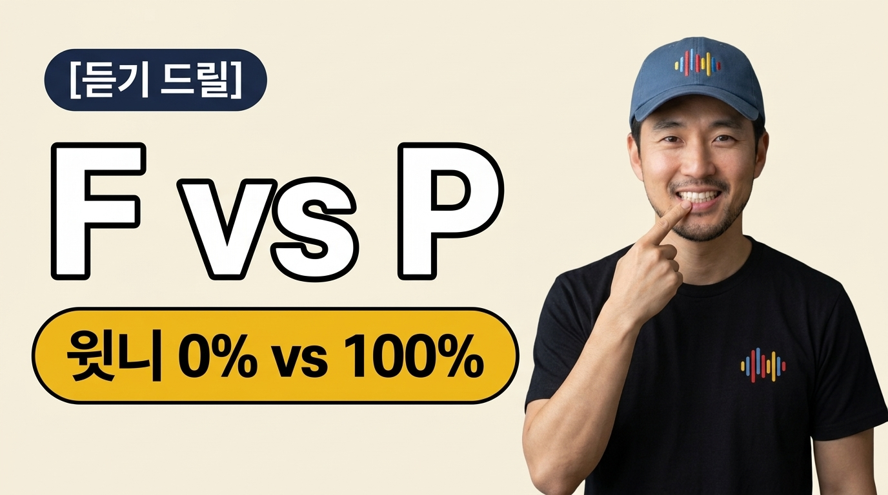
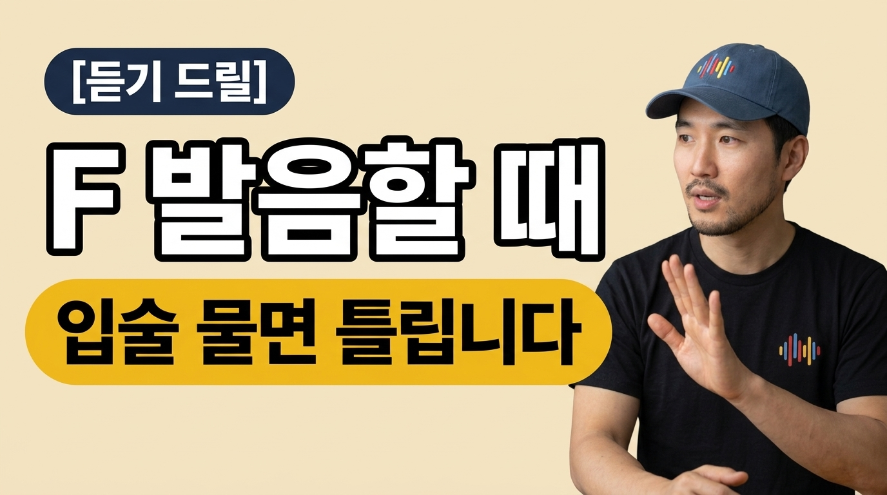
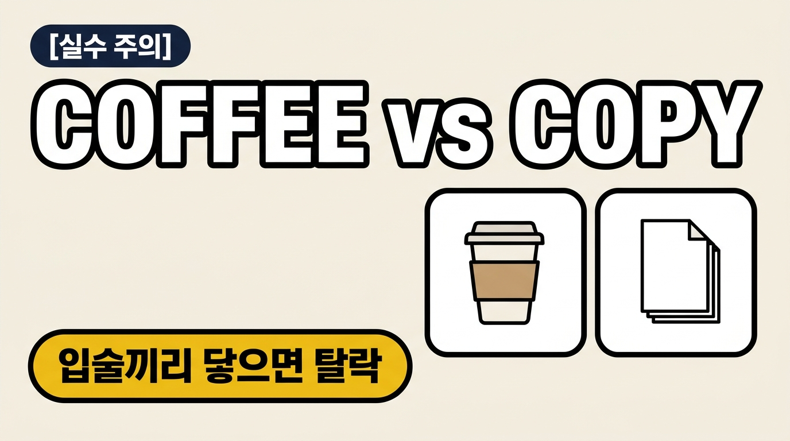

EP28 업로드 패키지
원어민이 F와 P를 0.1초 만에 구별하는 법 | F vs P 24쌍 반복 듣기
영상 파일: English_Pronunciation_F_vs_P_Minimal_Pairs_Listening_Drill.mp4
업로드 체크리스트
[EP28 유튜브 업로드 체크리스트]
영상: English_Pronunciation_F_vs_P_Minimal_Pairs_Listening_Drill.mp4 (6분 56초)
⚠️ 올리기 전에 먼저 할 일
1. 썸네일은 새로 만드는 것을 권합니다. 옛 시안도 올릴 수는 있지만 중단하기로 한 아바타가 들어 있습니다.
videos/ep28-f-vs-p/prompts/thumbnail-prompts.md로 새로 만들어 같은 파일 이름으로 바꿔 넣으세요.
자동 업로드를 쓰면 교체한 뒤 대시보드 대기 큐에서 "이 썸네일 승인"을 눌러야 올라갑니다.
2. 영상 안 금지어는 다시 렌더링하지 않고 그대로 올리기로 했습니다 (2026-11-06). 남은 항목은 아래와 같습니다.
화면: 조음 8곳, 최소대립쌍 4곳 (단어 카드 진행 표시), 물리법칙 3곳, 0:37 배경 그림의 LABIODENTAL FRICATIVE · BILABIAL PLOSIVE, "남·여 3회 교차 집중 듣기" 라벨
음성: "물리법칙" 1번 (받아쓰기 기준)
□ 1. 영상 파일 업로드
□ 2. 제목: title.txt 복사. 테스트를 쓰면 아래 세트대로 등록
A안 메인 · thumbnail.jpg와 세트
B안 상식 뒤집기 · thumbnail-variant-a.jpg와 세트
C안 실수 주의 · thumbnail-variant-b.jpg와 세트
D안 호기심형 · 제목만 시험
□ 3. 설명: description.txt 복사 (챕터 포함)
□ 4. 태그: tags.txt 복사
□ 5. 고정 댓글: pinned-comment.txt 복사 후 첫 댓글로 등록하고 고정
□ 6. 최종 화면: 마지막 10초 (6:45부터), 추천 영상 + 구독 버튼
화면에 그려진 네모와 카드는 눌리지 않는 그림입니다. 스튜디오 최종 화면에서 같은 자리에 요소를 직접 얹으세요.
직전 편: EP27 (공개된 뒤 연결)
□ 7. 재생목록: "[이해하면 쉬운영어] 반복 듣기 정주행"에 추가. 이 재생목록은 아직 채널에 없으니 처음 한 번 만드세요.
□ 8. 자막: 아직 없습니다. subtitles/ 폴더를 만든 뒤 따로 올립니다.
□ 9. 시청자층: 아동용 아님
□ 10. AI 사용 표시: 예 (실사처럼 보이는 AI 배경 영상이 있음. 표시해도 노출과 수익에 불이익이 없다고 유튜브가 안내함)
썸네일



메인 제목
원어민이 F와 P를 0.1초 만에 구별하는 법 | F vs P 24쌍 반복 듣기
제목 시안 (제목 및 썸네일 테스트용)
A안 · 메인 · thumbnail.jpg와 세트
원어민이 F와 P를 0.1초 만에 구별하는 법 | F vs P 24쌍 반복 듣기
B안 · 상식 뒤집기 · thumbnail-variant-a.jpg와 세트
F 발음할 때 아랫입술 꽉 물면 틀립니다 | F vs P 24쌍 소리 연습
C안 · 실수 주의 · thumbnail-variant-b.jpg와 세트
Coffee와 Copy, 입술 닿는 순간 갈립니다 | F vs P 24쌍 반복 듣기
D안 · 호기심형 · 제목만 시험
F와 P가 죽어도 안 들렸던 진짜 이유 | 윗니 0% vs 100% 소리 원리
설명
학창 시절에 F는 입술을 물고, P는 '프'라고 배우셨죠? 커피 coffee와 카피 copy는 한글로 쓰면 둘 다 'ㅍ'입니다. 그래서 미드에서 F와 P가 빠르게 지나가면 구별이 잘 안 됩니다. 차이는 입술을 세게 무는 데 있지 않습니다. 윗니가 닿느냐 안 닿느냐, 딱 하나입니다. 이 영상에서 24쌍을 남녀 목소리로 번갈아 반복해서 들어보세요. 🎧 ⏱️ 챕터 00:00 Coffee vs Copy, 입술 닿는 순간 갈리는 소리 00:37 원리: 윗니 0% (공기 팡 터뜨리기) vs 윗니 100% (바람 슥 밀어내기) 01:14 1단계: 단모음 기본 6쌍 (fan vs pan, fat vs pat...) 02:01 2단계: 장모음 & 이중모음 6쌍 (fool vs pool, face vs pace...) 02:48 3단계: 실생활 2음절 6쌍 (cof · fee vs co · py...) 03:37 4단계: 받침 끝소리 6쌍 (leaf vs leap, calf vs cap...) 04:21 문장 속에서 듣기 7문장 04:55 듣고 바로 맞히기 퀴즈 8문제 05:31 스마트폰 캡처용 1장 요약 치트시트 05:50 24쌍 앵콜 총복습 06:45 마무리 & 다음 영상 추천 ━━━━━━━━━━━━━━━━━━━ 💡 F vs P 핵심 요약 ① [p] 윗니 0%: 두 입술을 가볍게 닫았다가 공기를 팡 터뜨리는 소리 (pan, pat, pool, pace, copy, leap 등) ② [f] 윗니 100%: 윗니를 아랫입술 안쪽에 살짝 대고 바람을 슥 밀어내는 소리 아랫입술을 꽉 물면 오히려 부자연스럽게 들립니다. (fan, fat, fool, face, coffee, leaf 등) ━━━━━━━━━━━━━━━━━━━ 📌 이렇게 들어보세요 단어만 보지 마시고, 04:21부터 나오는 문장 7개와 04:55 퀴즈 8문제로 귀가 먼저 반응할 때까지 들어보세요. 05:31에 나오는 요약 치트시트는 캡처해 두시면 언제든 다시 볼 수 있습니다. #영어발음 #F발음 #P발음 #FvsP #영어듣기 #영어리스닝 #영어회화 #기초영어 #파닉스 #이해하면쉬운영어
고정 댓글
오늘도 F vs P 24쌍 반복 듣기 훈련을 끝까지 완주하신 여러분, 정말 고생하셨습니다! 👏 💬 여러분은 24개 짝단어 중 어떤 단어가 귀로 가장 구분하기 어려우셨나요? (예: Coffee vs Copy? Leaf vs Leap? Fool vs Pool?) 댓글로 남겨주시면 발음 교정 팁을 함께 나눠드리겠습니다! 📱 05:31 요약 치트시트는 스마트폰에 캡처해 두고 틈날 때마다 꺼내보세요! 구독과 좋아요는 다음 유익한 발음 영상 제작에 큰 힘이 됩니다. ❤️
태그
영어발음, F발음, P발음, F vs P, 영어리스닝, 영어듣기, 영어회화, 기초영어, 파닉스, 발음규칙, 짝단어, 영어공부, 원어민발음, 이해하면쉬운영어, English pronunciation, english listening
챕터
00:00 Coffee vs Copy, 입술 닿는 순간 갈리는 소리 00:37 원리: 윗니 0% (공기 팡 터뜨리기) vs 윗니 100% (바람 슥 밀어내기) 01:14 1단계: 단모음 기본 6쌍 (fan vs pan, fat vs pat...) 02:01 2단계: 장모음 & 이중모음 6쌍 (fool vs pool, face vs pace...) 02:48 3단계: 실생활 2음절 6쌍 (cof · fee vs co · py...) 03:37 4단계: 받침 끝소리 6쌍 (leaf vs leap, calf vs cap...) 04:21 문장 속에서 듣기 7문장 04:55 듣고 바로 맞히기 퀴즈 8문제 05:31 스마트폰 캡처용 1장 요약 치트시트 05:50 24쌍 앵콜 총복습 06:45 마무리 & 다음 영상 추천